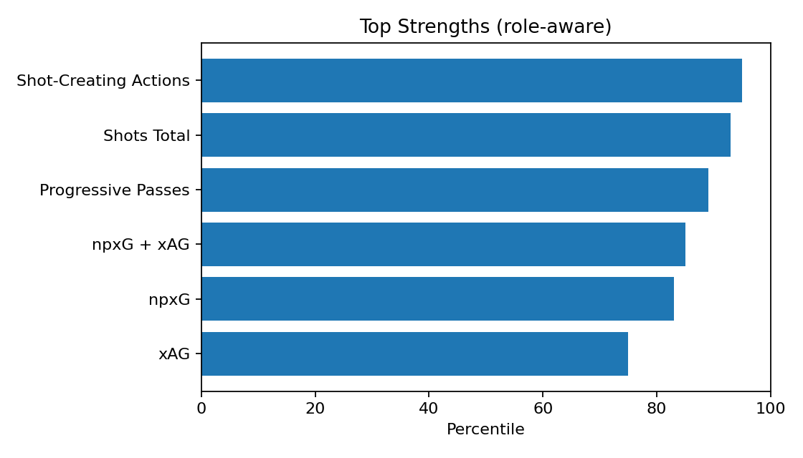
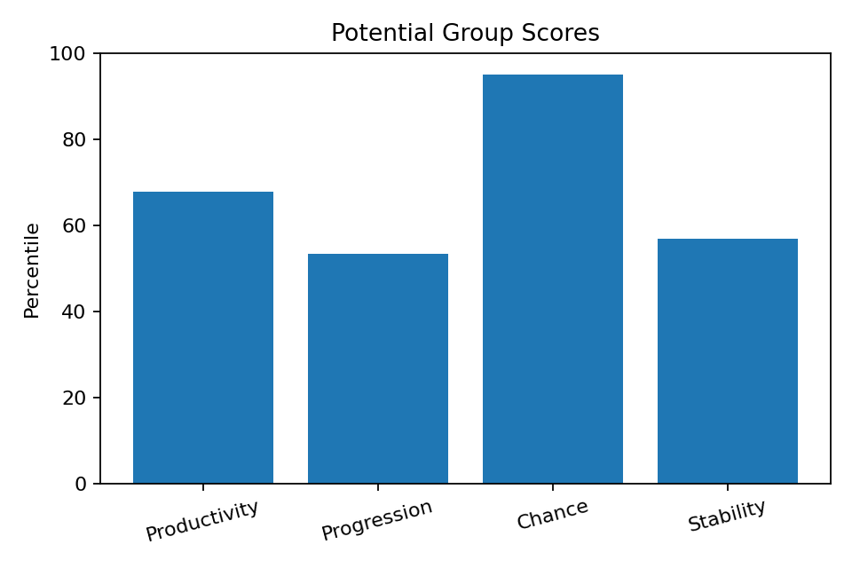
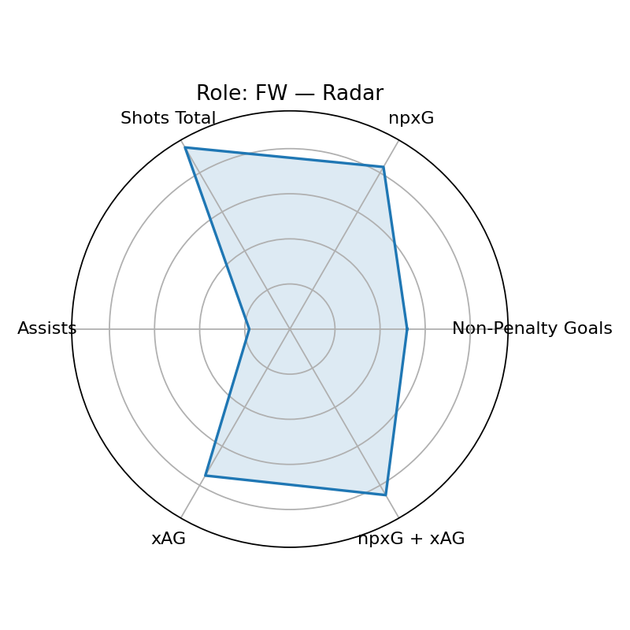

Scout Visual — Cole Palmer
Player ID: dc7f8a28 · Role: FW · Minutes: 2741 · Age: 23
Current: None (base None, rel None, age None)
Potential: 71.7 — Groups: 67.7/53.4/95.0/56.8
Top Strengths

Potential Groups

Role/Style Radar

Playstyle Engine
Primary: Wide Playmaker (70.5)
Top-3: Wide Playmaker(70.5), Inside Forward(69.8), Inverted Winger(69.7)
근거: Shot-Creating Actions 상위 95퍼센(강점) · Progressive Passes 상위 89퍼센(강점) · Assists 하위 82퍼센(보완)
개선: Assists 개선 필요(현재 18퍼센)
Wikipedia-derived Qualitative
Qual Score: 98.0
injury=1, discipline=0,
transfer=0, char+= 0,
char-= 0, recent_w=1.0
Wikipedia: https://en.wikipedia.org/wiki/Cole%20Palmer
Bias Diagnostics
Mode: v3
Diversity: 0.96
Imbalance penalty: 8.3
Uncertainty penalty: 0.8
Age gain: 8.8
Narrative — Current
[현재력] 역할=FW, 최종점수=71.4 / 강점: Shot-Creating Actions(95p), Shots Total(93p), Progressive Passes(89p), npxG + xAG(85p), npxG(83p) / 약점(역할기반): Assists(18p), Progressive Passes Rec(20p) / 기초=60.1, 출전보정=2.6, 나이표시=4.0
Narrative — Potential
[잠재력 v3] 역할=FW, 잠재점수=71.7 / 그룹: 생산67/전진53/찬스95/안정56 / 엘리트95+ 7, 99+ 1, 다양성=0.96 / 불확실성패널티=0.8, 불균형패널티=8.3, 나이이득=8.8
Coaching — Style-specific
- Shot-Creating Actions 유지+응용: 역압박 상황 전개/선택지 추가 / 주 1회(클립 5개)
- Progressive Passes 유지+응용: 역압박 상황 전개/선택지 추가 / 주 1회(클립 5개)
- xAG 유지+응용: 역압박 상황 전개/선택지 추가 / 주 1회(클립 5개)
- Assists 개선 루틴: 스텝별(기초→속도→압박 하) 반복 / 주 3회(20분)
- Passes Attempted 상향: 난이도 상승(제한터치·시간압박) / 주 2회(10분)
- Progressive Carries 상향: 난이도 상승(제한터치·시간압박) / 주 2회(10분)
Growth Roadmap — Phased
- · 0~6주: 고난도 상황 반복(압박/시간 제약) 주 2세션 / 파이널 서드 의사결정 트리 15분 / 프리셉션 각도 교정(45°/90°) / 리버스/스루 타이밍: 더미 2명
- · 6~12주: 압박 하 전진패스(제한터치) 반복 / 세컨드볼 후 즉시 전개 패턴
- · 12주+: SCA 70퍼센+ 달성 / 프로그레시브 패스 80퍼센+ 유지 / Shot-Creating Actions: 95→85 퍼센 상향 / Progressive Passes: 89→85 퍼센 상향